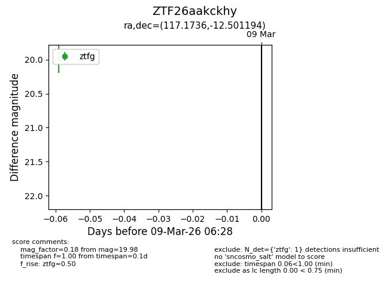
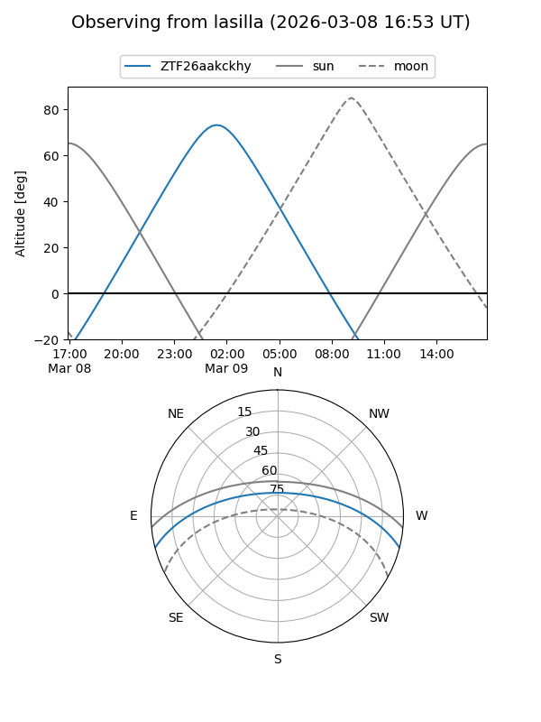
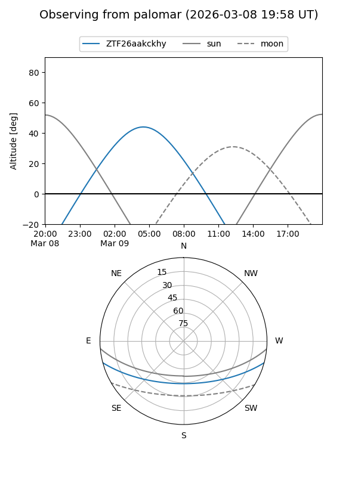

ZTF26aakckhy
Target ZTF26aakckhy at 2026-03-09 06:29
Aliases and brokers:
FINK: link
Lasair: link
ALeRCE: link
alt names
ZTF26aakckhy (ztf,fink_ztf)
Coordinates:
equatorial (ra, dec) = 117.1736,-12.50119
equatorial (HMS+DMS) = 07:48:41.65,-12:30:04.30
galactic (l, b) = (230.6764,+6.66817)
Flags:
Photometry:
last ztfg=19.98
1 ztfg detections
Lightcurve

Visibility


Additional plots